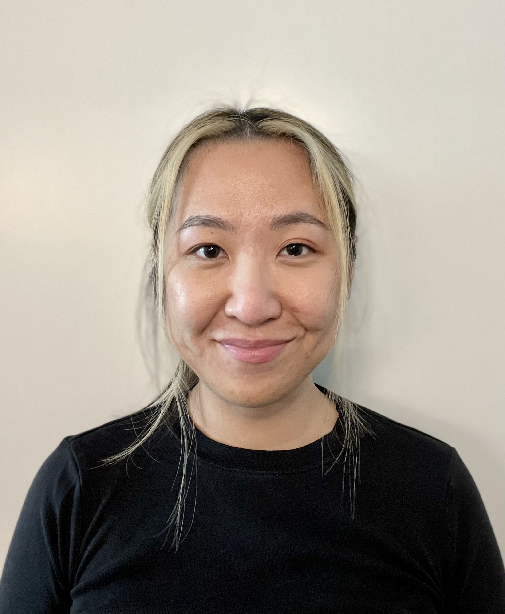

UX Researcher based in Ann Arbor and San Francisco. Currently studying at the University of Michigan.
About Me
Hello, I'm Stephanie. I'm an HR People Manager-turned-User Researcher looking to pursue opportunities to translate insights to universal solutions. Take a look through my site to learn more about me and what I do.
My Work + Methods
I work in mixed methods, merging qualitative analysis with quantitative techniques. My experience in tech industry HR and Recruiting Programs afforded ample opportunity to explore the intersection of big data and human empathy. Methods include:
- Semistructured interviews + contextual inquiry
- Card sorting
- Persona creation
- User story mapping
- Process flow analysis
- Usability testing
- Co-design workshops
- Survey development
Work Summary
Currently, I'm a Master's Student at the University of Michigan School of Information, concentrating in User Research & Design. Previously, I worked as a HR/Recruiting Program Manager in the tech industry at companies such as Cruise, Uber, and LinkedIn. Areas of expertise include: Organizational behavior & psychology, Ridehail and gig economies, and Autonomous vehicles I'm currently based in Ann Arbor, MI but consider my home to be the San Francisco Bay Area. I am open to relocation or remote throughout the United States and abroad.